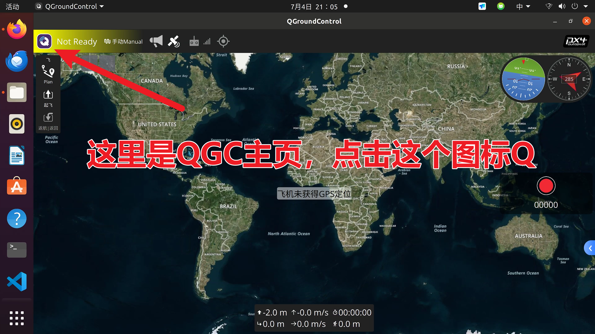
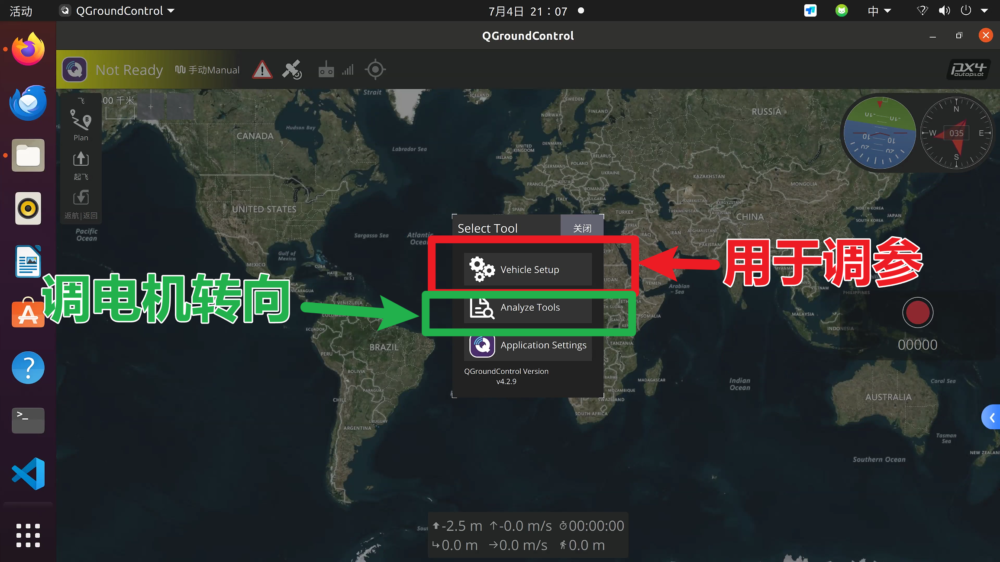
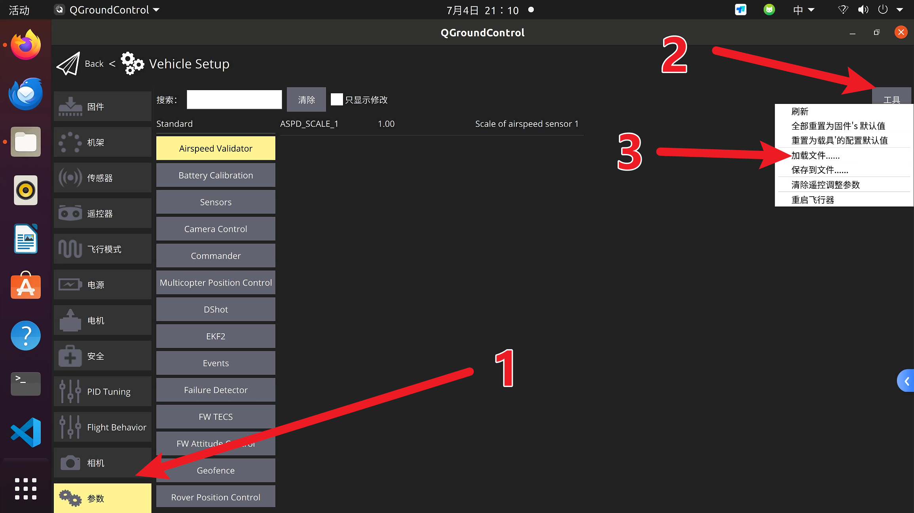
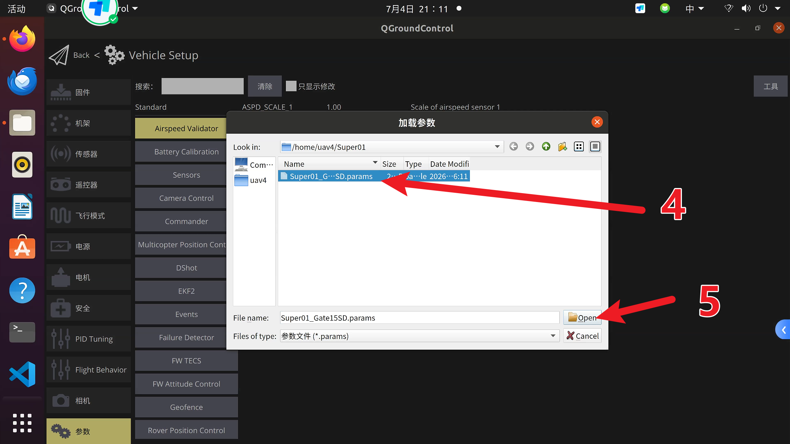
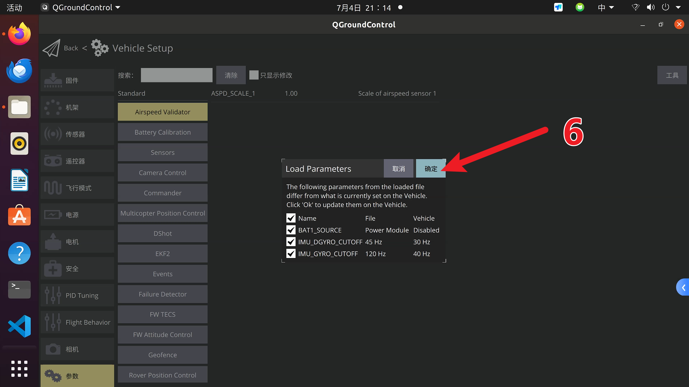
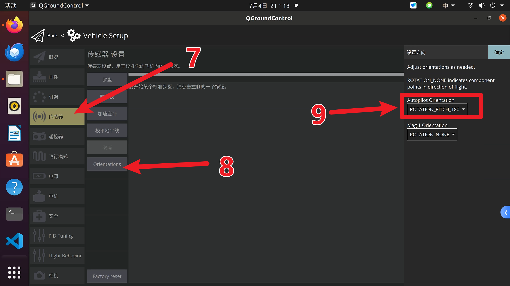
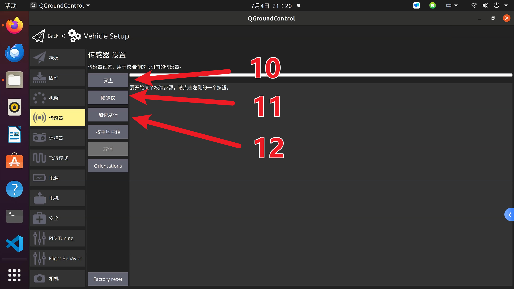
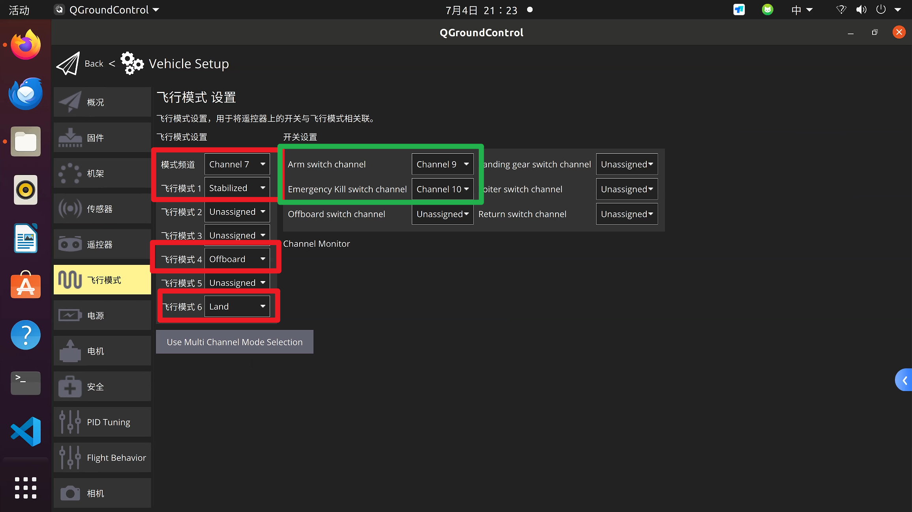

方案一：导入已有参数文件
本方案用于已经有同款 Super 飞机参数文件的情况。适用前提是：PX6C / V6C 类飞控、PX4 v1.13.3、四旋翼、F60 MINI 4IN1 V2 电调、DShot600、NUC 通过 USB 连接 MAVROS、Mid-360 + Point-LIO 定位融合。
导入前先备份
导入参数会覆盖飞控当前配置。导入前必须在 QGC 参数页保存一份当前参数文件，导入后再重新检查飞控朝向、电机顺序、遥控和 EKF 参数。
连接 QGC
飞控调参通过 USB 连接飞控 Type-C 口后，在 QGroundControl 中完成。调试电脑可以是 Windows 笔记本，也可以是机载 NUC。
如果在 Ubuntu 20.04 的 NUC 上安装 QGC，按本教程记录使用 QGroundControl v4.2.9。Windows 上可直接安装 QGC 桌面版。

进入 Vehicle Setup：

导入参数文件
进入 Vehicle Setup > Parameters，在工具菜单中选择加载文件：

选择后缀为 .params 的参数文件：

导入时勾选需要覆盖的参数并确认：

建议后续把固定参数文件放到项目的 docs/assets/params/ 或 params/ 目录，文件名使用：
px4-v1.13.3-super-mid360-vision-pose.params
导入后重点抽查：
| 类别 | 参数 |
|---|---|
| 输出协议 | DSHOT_CONFIG = DShot600 |
| EKF 定位融合 | EKF2_AID_MASK = 24、EKF2_HGT_MODE = Vision |
| EKF Gate | EKF2_EVP_GATE = 15.0、EKF2_HDG_GATE = 6.0 |
| 外部视觉噪声 | EKF2_EVP_NOISE = 0.01、EKF2_EVA_NOISE = 2.86deg |
| 外部视觉延迟/安装偏移 | EKF2_EV_DELAY = 5.0ms、EKF2_EV_POS_Z = -0.080m |
| 安全断路器 | CBRK_SUPPLY_CHK、CBRK_USB_CHK、CBRK_IO_SAFETY |
| 电机输出 | SYS_USE_IO = Disable PWM、MC_AT_EN = Disable |
飞控朝向与传感器校准
按照现有 Super 飞机的飞控安装方式，飞控与机架的旋转姿态设置为 Pitch 180°：

导入参数并重新连接飞控后，进入传感器校准。按 QGC 提示旋转或保持飞机姿态：

建议顺序：
- Gyroscope：飞机静止放平。
- Accelerometer：按 QGC 提示摆放不同姿态。
- Level Horizon：机体放在实际水平姿态。
- Compass：若启用磁罗盘则校准；若主要依赖 Point-LIO yaw，也要避免留下不一致的罗盘配置。
飞行模式检查
进入 Flight Modes，确保飞行模式配置与当前 Super 飞机的既有设置一致：

导入后必须检查
完成参数导入和校准后，不要直接装桨。继续完成：
- 电机测试与反转。
- 遥控器校准和失控保护检查。
- NUC 的 MAVROS 连接检查。
- 启动 Mid-360、Point-LIO 和
vision_pose桥接。 - EKF Gate 与融合检查。